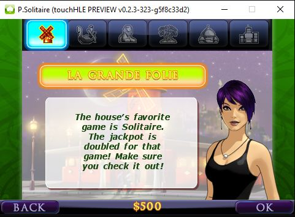
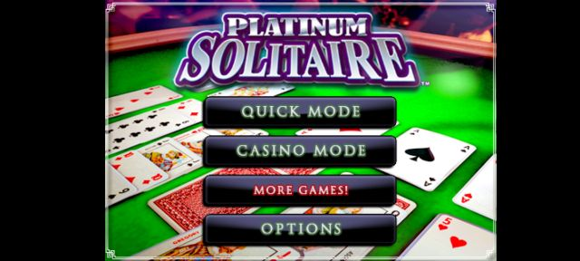
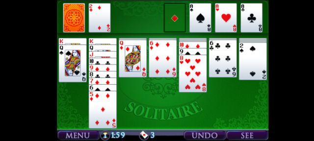
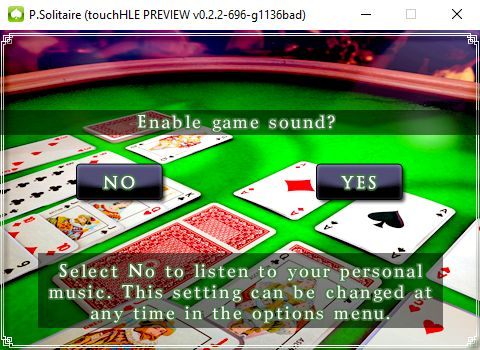
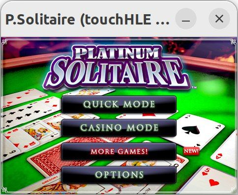

| App name | Platinum Solitaire |
|---|---|
| Release year | 2008 |
| Developer/Publisher | Gameloft |
| First reported | |
| First reported by | @nighto |
| Version number | Display name | Bundle identifier | Minimum iOS version | Best rating | Last updated | First reported by | |
|---|---|---|---|---|---|---|---|
| 1.4.3 | P.Solitaire | com.gameloft.PSolitaire | (not specified) | ⭐️⭐️⭐️⭐️⭐️ | @nighto | ||
| 1.5.4 | P.Solitaire | com.gameloft.PSolitaire | 2.1 | ⭐️⭐️ | @nighto | ||
| 1.6.0 | P.Solitaire | com.gameloft.PSolitaire | 2.2.1 | ⭐️⭐️⭐️⭐️ | @nighto |
| Version number | touchHLE version | Operating system | GPU | Scale hack supported? | Rating | Reported | Reported by | Remarks | Screenshot |
|---|---|---|---|---|---|---|---|---|---|
| 1.6.0 | v0.2.3-323-g5f8c33d2 | Windows 10 | Intel(R) UHD Graphics 530 | Didn't test | ⭐️⭐️⭐️⭐️ | @Quochieu0211 | I can now access to the Quick Mode and Casino Mode (and logo didn't tilt like the Android version), however, some of the sound effects in game is keep on looping | View | |
| 1.4.3 | v0.2.3-251-g92674bfd | Android 13 | Mali-G72 | Didn't test | ⭐️⭐️⭐️⭐️⭐️ | @DaCringeyBaka | Ah, I was wrong about the logo being off-position; it was intended to happen when I tilt my device. | View | |
| 1.4.3 | v0.2.3-251-g92674bfd | Android 13 | Mali-G72 | Didn't test | ⭐️⭐️⭐️⭐️ | @DaCringeyBaka | Works very well in general; only known issue is the logo in the title screen being off-position. | View | |
| 1.4.3 | v0.2.2-696-g1136bad | Windows 10 | Intel(R) HD Graphics 620 | Didn't test | ⭐️⭐️ | @DaCringeyBaka | The version now makes it to the sound screen, but the screen is unresponsive, and the window can only be closed using Task Manager. Error: touchHLE::libc::posix_io: Warning: read(3, 0x37835460, 0x10000) read only 0x9c73 bytes | View | |
| 1.4.3 | v0.2.2-177-gec7ba5e | Ubuntu 22.04 | Intel UHD Graphics 620 | Yes | ⭐️ | @nighto | This version crashes on loading / Please Wait screen with: thread 'main' panicked at src/frameworks/foundation/ns_run_loop.rs:75:5: assertion failed: env.current_thread == 0 | ||
| 1.5.4 | v0.2.2-177-gec7ba5e | Ubuntu 22.04 | Intel UHD Graphics 620 | Yes | ⭐️⭐️ | @nighto | Same thing on this version, main menu works with sound/music but going in game crashes with: thread 'main' panicked at src/libc/stdio/printf.rs:136:17: assertion failed: length_modifier.is_none() | ||
| 1.6.0 | v0.2.2-176-ge52f3fb | Ubuntu 22.04 | Intel UHD Graphics 620 | Yes | ⭐️⭐️ | @nighto | Reaches main menu / Options, but choosing Quick Mode or Casino Mode makes it crash with: thread 'main' panicked at src/libc/stdio/printf.rs:136:17: assertion failed: length_modifier.is_none() | View |
| Rating | Description |
|---|---|
| ⭐️ | Completely broken: app crashes immediately without any user interaction. |
| ⭐️⭐️ | Only (part of) the main menu, intro or similar is working. |
| ⭐️⭐️⭐️ | Some of the main content of the app works, but with major issues. |
| ⭐️⭐️⭐️⭐️ | The main content of the app works (e.g. entire game is playable) with only small issues. |
| ⭐️⭐️⭐️⭐️⭐️ | Everything works. The app is fully usable. |




